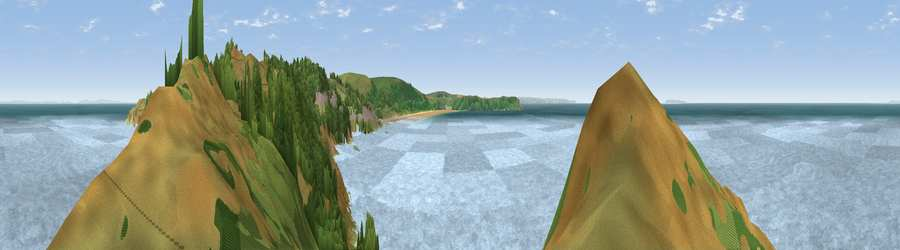

Viewpoint near Mortehoe
#5912 in England · top 23% of its area beats it · near MortehoeThe view, rendered

A 360° render of this exact spot computed from the terrain model, tree cover and land cover — summer colours, afternoon light, calibrated against photographs of famous viewpoints. Real trees, hedges and buildings will differ in detail.
The panorama
Grey silhouette: terrain skyline in each direction (720 bearings, Earth curvature and refraction included). Dashed green: skyline with trees (+15 m) and buildings (+8 m) as obstacles. Blue strip: how far the ground is visible on each bearing.
Where the view opens
Wedge length = distance to the farthest visible ground on that bearing (vegetation-aware). Rings at 10, 25 and 50 km.
What fills the view
77% water · 14% grassland · 8% woodland
Angular shares of the visible panorama (visual magnitude), not map area. Landscape diversity 0.31 (0–1 Shannon).
Key numbers
More beautiful places nearby
The staircase of upgrades: each row has a higher view potential than everything closer. Driving times are estimates from straight-line distance, calibrated against real road routing — check an actual route before setting out.
| Place | Direction | Drive | Score |
|---|---|---|---|
| Mortehoe Hill | E · 1 km | ~3 min | 82.7 |
| Viewpoint near Woolacombe | SSE · 4 km | ~9 min | 84.7 |
| Viewpoint near Combe Martin | ENE · 14 km | ~25 min | 86.9 |
| Viewpoint near Combe Martin | E · 15 km | ~27 min | 88.9 |
| Holdstone Hill | E · 17 km | ~30 min | 90.2 |
| The Knoll | ESE · 123 km | ~147 min | 91.0 |
51.18777, -4.22470 · source: screening · position refined by local search. Computed location — check access rights before visiting.